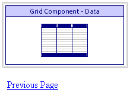

ASWCUSTONE.A5W
Purpose
Application administrators users use the ASWCUSTONE.A5W page to view a single customer record.
Links
The Customers > Send Email entry in the NAV_INT navigation component calls the ASWSENDEMAIL.A5W page. The lookup buttons next to the Send to, CC, and BCC controls display the GRD_CUSTEMAIL lookup grid. The lookup button under the View control displays the ASWCUSTONE.A5W page.
Description
The page normally receives a filter expression as an argument in a URL to open the page with the correct record. This page is intended to only open as a popup page or within a popup. Some parameters have an override to allow the component to work on this page.
ASWCUSTONE.A5W contains the GRD_CUST grid component.

ASWCUSTONE.A5W in the WYSIWYG tab of the HTML Editor

ASWCUSTONE.A5W in the Browser
Edits to the Page Source
When you look at ASWCUSTONE.A5W with the Source tab of the HTML Editor, you will see a large amount of HTML and Xbasic code. The HTML Editor placed almost all of it there automatically, as we used the WYSIWYG tab to place the tables, text, graphics, and components on the page. There are a few interesting exceptions, where we changed the page code through the Source tab.
We added four overrides of the grid component's properties.
The grid's grid_is_editable and edit.allow_update properties are FALSE, which prevents the user from editing records.
The grid's title ( title ) is set to blank to supress the title defined in the component.
|
... grid component code inserted by the HTML Editor with tmpl_GRD_CUST grid_is_editable = .f. edit.allow_update = .f. title = "" end with |
This Javascript code causes the browser to close the page when the user clicks the "Close" link.
|
|